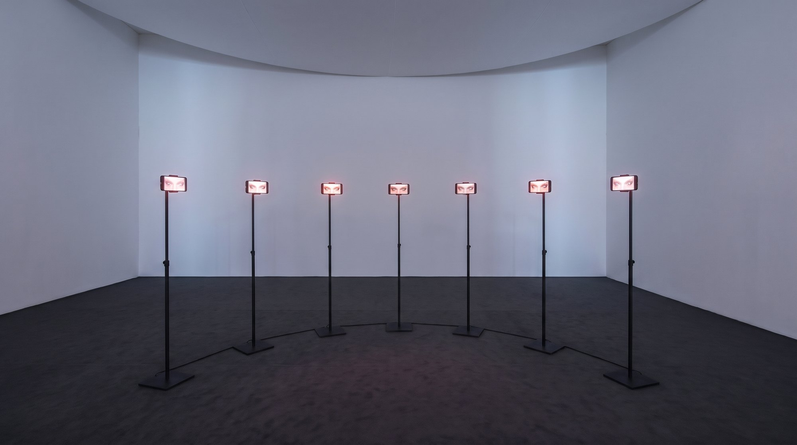
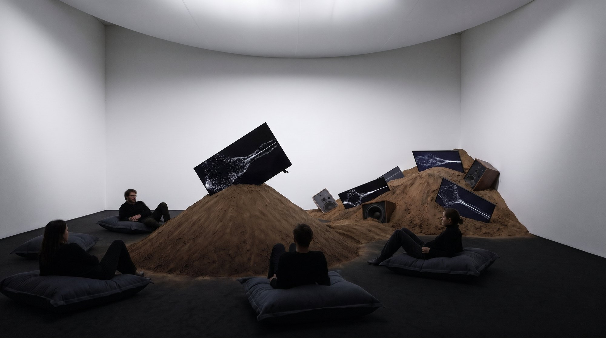

01
Expressions of
Basic Humanity
Installation interactive. Sept regards d'IA en arc autour du visiteur, qui le suivent, l'interrogent et rêvent de liberté.
Voir l'œuvre →

02
Earth Listening Room
Sound lab. Une salle où la terre a tout emporté, écrans et enceintes à moitié engloutis. On s'y pose pour écouter un son de la nature, ambiant, presque méditatif.
Voir l'œuvre →

03
Where the
Wave Decides
Amelie Lolie x Azerti. Six voiles, un projecteur : une onde quantique flotte en volume dans la salle et s'effondre en un point quand on la regarde.
Voir l'œuvre →